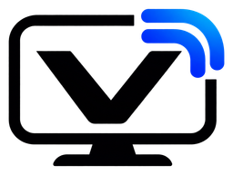
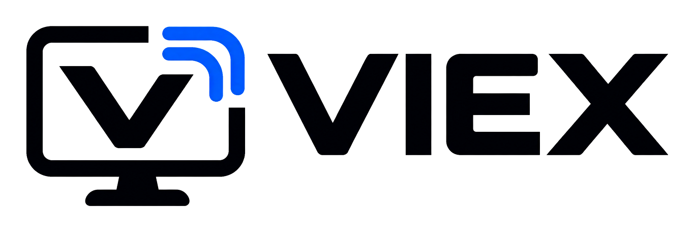
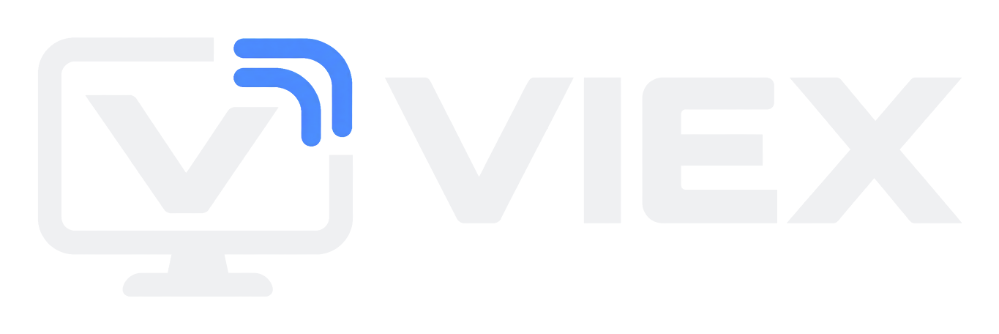

Multi-PC
Register as many Hosts as you like and pick which one to watch from a live online/offline list.


Loading VIEX

VIEX is a free, self-hosted remote screen viewer. Install the Host on your computers, deploy a tiny relay for free, and watch every monitor live from your phone or laptop — peer-to-peer and encrypted.
Latest release on GitHub · Windows 10/11 · Android 7+
You own every part. Nothing is hosted for you, so there is nothing to sign up for.
A tiny Node server that keeps the device list and brokers the handshake. One click on Render's free tier. Set a password and you're done.
Deploy guide →Run the installer on each PC you want to watch. Enter your server URL and password once — it starts with Windows and announces itself online.
Download →Install the Android app (or open the web viewer), sign in with the same details, pick a PC, and watch all of its screens live.
Get the app →Register as many Hosts as you like and pick which one to watch from a live online/offline list.
Every display is its own video track. See them all in a grid, tap one for full screen, swipe between them.
Starts hidden with the system and registers itself online. After first-run setup there is nothing left to do.
The protocol has no mouse or keyboard channel at all. VIEX cannot control your computer — by design.
Approve each request, trust specific viewers, or silence popups entirely. Choices live only on the PC.
Video is peer-to-peer, DTLS-SRTP encrypted. Your relay is password-gated and never sees a pixel.
Works out of the box with free defaults. Paste your own coturn when you want rock-solid connections.
Clone it, fork it, deploy your own. Every release is built in public by GitHub Actions.
Every push to main is built and published automatically.
Install on every PC you want to watch. Runs in the tray, starts with Windows.
VIEX-Host-Setup.exeWatch your PCs from your phone. Enable “install unknown apps” for your browser, then open the APK.
VIEX-Viewer.apkThe server bundle (Node 20+) with the web viewer built in. Or deploy it to Render in one click.
viex-relay.zip Deploy to RenderAll files are on the GitHub releases page. Windows may show a SmartScreen notice because the open-source build isn't code-signed — choose “More info → Run anyway”.
Click Deploy to Render above (or use any Node host / VPS). When asked for VIEX_PASSWORD, choose a strong password of 8+ characters. You'll get a URL like https://viex-relay.onrender.com.
VIEX_PASSWORD=choose-a-long-password
PORT=8787 # set by Render automatically
# optional: your own TURN servers (JSON) handed to every client
VIEX_ICE_SERVERS=[{"urls":"turn:turn.example.com:3478","username":"u","credential":"p"}]Render's free tier sleeps without outside traffic. Add your Relay's /health URL to a free external pinger — UptimeRobot or cron-job.org — every 5–10 minutes. An in-process timer does not work.
https://your-relay.onrender.com/healthRun VIEX-Host-Setup.exe on each PC. On first launch enter your Server URL and Password. Done — it now starts with Windows and shows up as online.
Install VIEX-Viewer.apk on your phone (or open your Relay URL in any browser), enter the same URL and password, pick a PC, and tap Watch. Accept the prompt on the PC the first time — choose “Always allow” to trust that device.
Full documentation, troubleshooting and self-hosting options are in the README.
Ask, Auto-Approve and Quiet Mode only change whether you get a popup. In every mode, while someone is watching, the Host shows a small always-on-top “VIEX is live” indicator and a red tray icon — and it can't be switched off. Without that, a screen viewer becomes a covert surveillance tool; with it, VIEX stays a tool for watching your own computers. Forks are asked to keep it that way.
No. VIEX is view-only by design — there is no mouse or keyboard path in the protocol. If you need remote control, use a different tool.
No. The Relay only passes the handshake. Video flows directly between your PC and your phone (or through a TURN relay when your network blocks direct connections), always encrypted with DTLS-SRTP.
$0 for personal use: Render's free web service, Google's free STUN, OpenRelay's free TURN tier, and a free uptime pinger.
The Host is built with Tauri and the capture library is cross-platform, so yes in principle — releases currently ship Windows only. The README explains how to build it for other systems.
The open-source build isn't code-signed. Choose “More info → Run anyway”, or build it yourself from source.
Any number of monitors per PC. Version 1 allows one viewer per PC at a time; multiple viewers are on the roadmap.